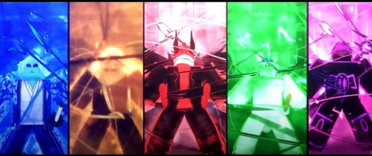
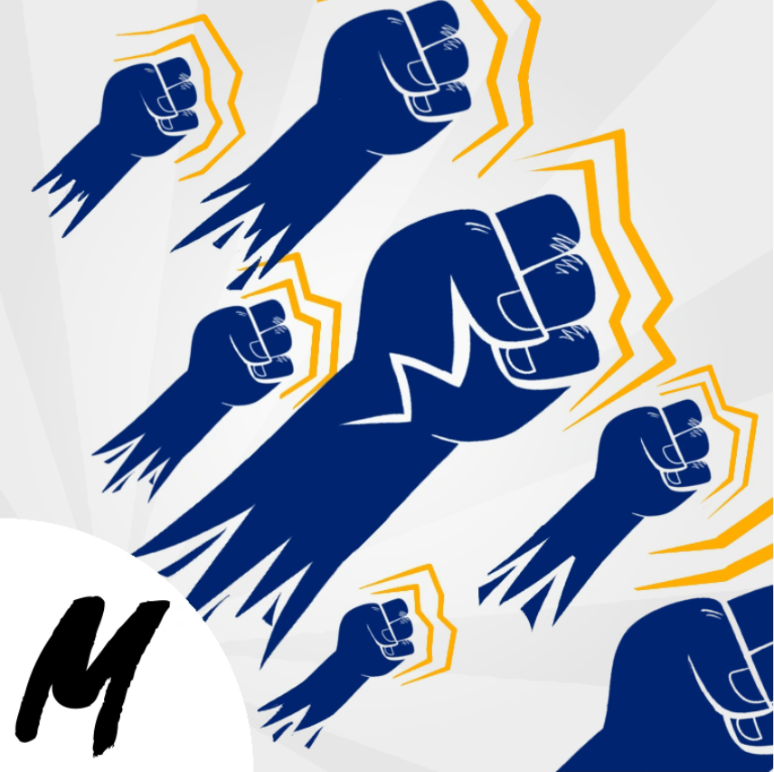

Awakening to the Power of Unity: A Journey of Race Consciousness in Blox Fruits
Once upon a time, in the vast virtual world of Blox Fruits, I embarked on a thrilling journey that not only tested my gaming skills but also awakened a newfound understanding of the importance of race..
Read More
The Divine Dance: Unleashing the Godhuman Fighting Style in Blox Fruits
Blox Fruits, a realm teeming with adventure and combat, offers players the chance to explore diverse fighting styles that harness the extraordinary powers within.
Read More
The Bountiful Fruits of Adventure: Exploring Blox Fruits' Juicy Universe

In the captivating virtual realm of Blox Fruits, an exciting and immersive gaming experience awaits players, filled with thrilling battles, hidden treasures, and a unique twist—fruits!
Read More
Adornments of Power: Unveiling the Magnificence of Accessories in Blox Fruits
In the dynamic world of Blox Fruits, where strength, strategy, and adventure collide, accessories stand as remarkable adornments that elevate both style and power.
Read More
Unleashing Unparalleled Power: The Superhuman Fighting Style in Blox Fruits
In the captivating world of Blox Fruits, where extraordinary abilities and fierce battles reign supreme, the Superhuman Fighting Style stands as a testament to the heights of human potential.
Read More
Blades of Destiny: Unleashing the Power of Swords in Blox Fruits
Within the realm of Blox Fruits, where adventure and combat intertwine, swords stand as iconic symbols of power, precision, and the warrior's art.
Read More
Unleashing the Art of Combat: Exploring Fighting Styles in Blox Fruits
Blox Fruits, a realm of exhilarating battles and immersive adventure, offers players the opportunity to embrace a variety of fighting styles, each with its own unique flair and strategies.
Read More
Unleashing the Thrill of Battle: Exploring Combat in Blox Fruits
In the exhilarating realm of Blox Fruits, where adventure knows no bounds, combat reigns supreme.
Read More
Conquering the Epic Challenges: Raid Bosses in Blox Fruits
In the thrilling world of Blox Fruits, where adventure and combat intertwine, players face a monumental test of skill, teamwork, and strategy: the mighty Raid Bosses.
Read More
Forged in Adventure: Exploring the Diverse Materials in Blox Fruits
In the vast and dynamic world of Blox Fruits, materials play a crucial role in crafting, upgrading, and enhancing weapons, armor, and other essential items.
Read More
Electrifying Mastery: Unleashing the Electric Claw Fighting Style in Blox Fruits
n the vibrant world of Blox Fruits, where fierce battles and extraordinary abilities collide, the Electric Claw fighting style stands out as a thrilling and electrifying combat discipline.
Read More
Unveiling the Enigma: The Mysterious Scientist in Blox Fruits
In the enigmatic world of Blox Fruits, where secrets and mysteries abound, a captivating figure emerges – the Mysterious Scientist.
Read More